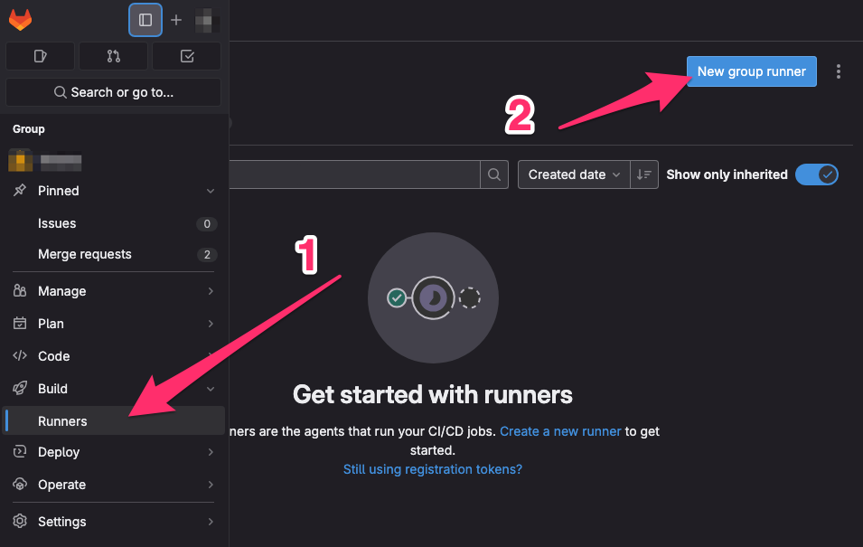
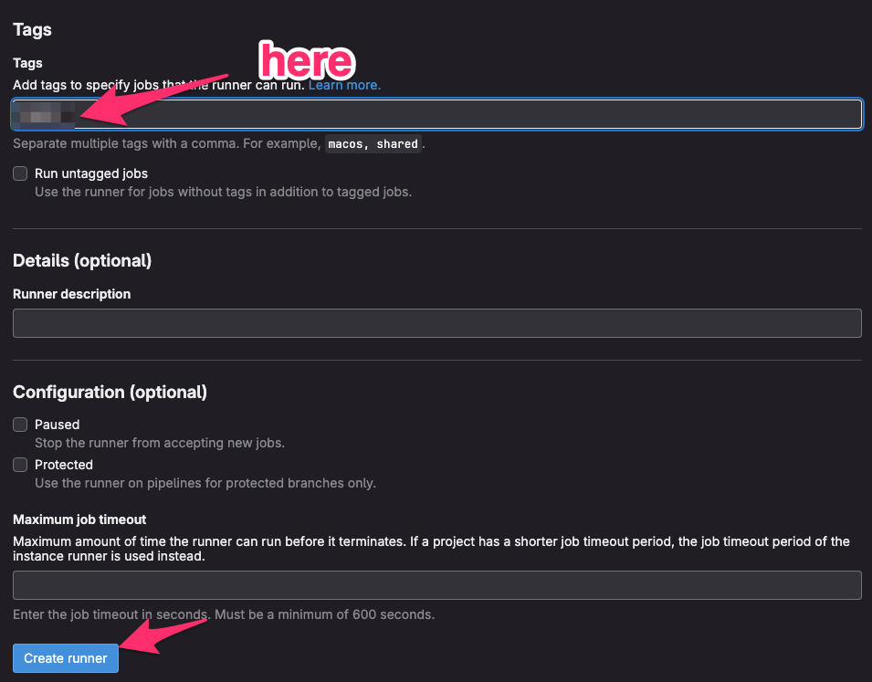
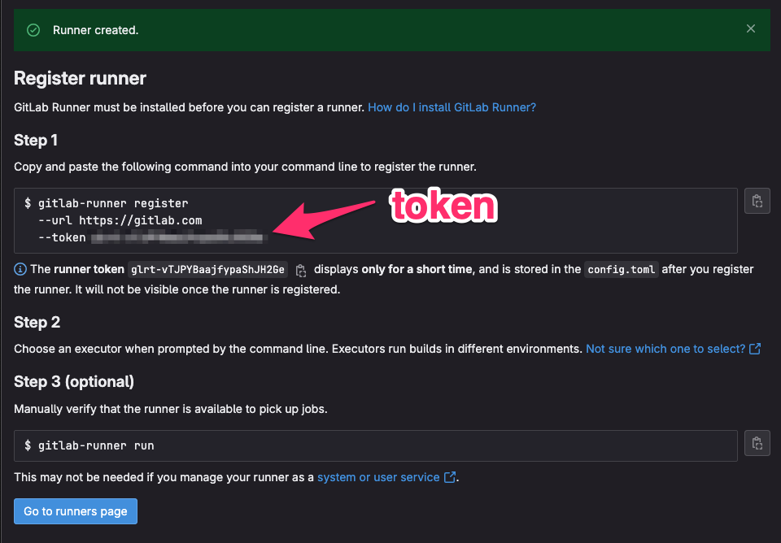

- Use local system volume mounts to start the runner container.
docker run -d --name gitlab-runner --restart always \
-v /srv/gitlab-runner/config:/etc/gitlab-runner \
-v /var/run/docker.sock:/var/run/docker.sock \
gitlab/gitlab-runner:latest
- Create a group runner with a runner
authentication token.

👉 Add group runner tag

👉 Get authentication token
 You may refer to this article.
- Register a runner
Don’t forget to change the authentication token.
RUNNER_TOKEN="glrt-vTJPYBaajfypaShJH2xx"
docker run --rm -v /srv/gitlab-runner/config:/etc/gitlab-runner gitlab/gitlab-runner register \
--non-interactive \
--url "https://gitlab.com/" \
--token "$RUNNER_TOKEN" \
--executor "docker" \
--docker-image docker:stable-dind \
--description "docker-runner"
- Edit
/srv/gitlab-runner/config/config.toml
Modify the following configurations:
concurrent: optionalprivilegedvolumes: docker in dockernetwork_mode: optional
/srv/gitlab-runner/config/config.toml
concurrent = 4 # change
check_interval = 0
shutdown_timeout = 0
[session_server]
session_timeout = 1800
[[runners]]
name = "docker-runner"
url = "https://gitlab.com/"
id = 28470179
token = "glrt-vTJPYBaajfypaShJH2Ge"
token_obtained_at = 2023-10-14T12:45:43Z
token_expires_at = 0001-01-01T00:00:00Z
executor = "docker"
[runners.cache]
MaxUploadedArchiveSize = 0
[runners.docker]
tls_verify = false
image = "docker:stable-dind"
privileged = true # change
disable_entrypoint_overwrite = false
oom_kill_disable = false
disable_cache = false
#volumes = ["/cache"] # change
volumes = ["/cache", "/var/run/docker.sock:/run/docker.sock"]
shm_size = 0
network_mode = "host" # add
- Restart Runner
docker restart gitlab-runner